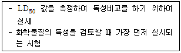
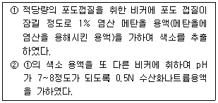

식품산업기사(구) (2007-08-05 기출문제)
1과목: 식품위생학
1. 경구 전염병의 예방대책으로 가장 중요한 것은?
- 식품을 냉동, 냉장한다.
- 보균자의 식품취급을 막는다.
- 가축 사이의 질병을 예방한다.
- 식품취급장소의 공기 정화를 철저히 한다.
(정답률: 알수없음)

2. polyvinyl chloride(PVC)를 사용한 식품용 기구, 용기 및 포장과 관련하여 위생상 문제되는 단량체는?
- vinylidene chloride
- styrene
- vinyl chloride
- butadiene
(정답률: 알수없음)
3. 다음 중 식물성 식품에서 유래하는 독소는?
- venerupin
- saxitoxin
- tetrodotoxin
- solanine
(정답률: 알수없음)
4. 유기인제는 다음 중 어느 효소와 작용하여 중독을 일으키는가?
- cytochrome oxidase
- hemoglobin oxidase
- aconirtase
- choline esterase
(정답률: 알수없음)
5. 식품 제조 공정 중 거품이 많이 날 때 소포의 목적으로 사용하는 첨가물은?
- 규소수지
- n - 핵산
- 규조토
- 유동파라핀
(정답률: 알수없음)
6. 미숙한 매실이나 살구씨에 함유되어 있는 유독성분은?
- sepsin
- amygdalin
- cicutoxin
- muscarlin
(정답률: 알수없음)
7. 우유 또는 크림의 세균 농도를 측정하는데 사용되는 시험법으로써 methylene blue를 기질로 사용하는 것은?
- coagulase test
- Reductase test
- Phosphatase test
- Babcock test
(정답률: 알수없음)
8. 다음 중 식품에 직접 포장하여 식품과 함께 먹을 수 있는 포장 재료는?
- Amylos film
- Aluminium foil
- Cellophane
- Polyethylene
(정답률: 알수없음)
9. 살모넬라 식중독에 대한 설명으로 틀린 것은?
- 균은 60℃에서 20분 정도 가열하면 사멸된다.
- 잠복시간은 8~48시간 정도이다.
- 발열, 복통, 설사 증상을 일으킨다.
- 독소를 생성하는 독소형 식중독을 유발한다.
(정답률: 알수없음)
10. 다음 중 복어의 독성이 가장 강한 부위는?
- 난소
- 위장
- 피부
- 껍질
(정답률: 알수없음)
11. 식품보관시 진드기류의 방제법으로 부적합한 것은?
- 포장에 의한 방법
- 습도를 줄이는 방법
- 냉장하는 방법
- 상온에서 보관하는 방법
(정답률: 알수없음)
12. 다음 중 합성착색료에 해당하지 않는 것은?
- 식용색소녹색 제3호
- 카르민
- 삼이산화철
- 스르빈산
(정답률: 알수없음)
13. 식품 중에 존재하는 색소단백질을 겹합시켜 그 색을 안정시키거나 선명하게 하는 첨가물과 관계없는 것은?
- 아질산나트륨
- 질산칼륨
- 차아염소산나트륨
- 질산나트륨
(정답률: 알수없음)
14. Gram 음성의 무아포간균으로서 유당을 분해하여 산과 가스를 생산하며, 식품위생검사와 가장 밀접한 관계가 있는 것은?
- 대장균군
- 젖산균
- 초산균
- 발효균
(정답률: 알수없음)
15. 단백질 식품이 불에 탈 때 생성되어 발암물질로 작용할 수 있는 것은?
- THM
- KCN
- benzopyrene
- choline
(정답률: 알수없음)
16. 일본에서 발생한 미나마타병의 유래는?
- 공장폐수 오염
- 대기 오염
- 방사능 오염
- 세균 오염
(정답률: 알수없음)
17. 다음 중 3ppm에 해당되는 것은?
- 100g 중 3g
- 1000g 중 3g
- 100g 중 3mg
- 1000g 중 3mg
(정답률: 알수없음)
18. carbonyl value에 대한 설명으로 옳은 것은?
- 트랜스지방의 함량을 측정하는 값이다.
- 불포화지방산의 함량을 측정하는 값이다.
- 가열 유지의 산화 정도를 판정하는 값이다.
- 단백질의 부패 정도를 판정하는 값이다.
(정답률: 알수없음)
19. 다음 중 식품을 매개로 감염될 수 있는 가능성이 가장 높은 바이러스성 질환은?
- A형 간염
- B형 간염
- 후천성면역결핍증(AIDS)
- 유행성출혈열
(정답률: 알수없음)
20. 다음과 같은 특징을 갖는 독성시험은?

- 아급성독성시험
- 급성독성시험
- 만성독성시험
- 유전독성시험
(정답률: 알수없음)
2과목: 식품화학
21. 전분분자의 비환원성 말단에서부터 차례로 포도당 2분자씩 분해하는 효소는?
- α - amylase
- β - amylase
- glucoamylase
- Isoamylase
(정답률: 알수없음)
22. 다음 중 이당류가 아닌 것은?
- 맥아당(maltose)
- 자당(sucrose)
- 젖당(lactose)
- 과당(ftuctose)
(정답률: 알수없음)
23. 다음 중 이중결합 수가 가장 많아 산패(rancidity)가 빠른 지방산은?
- oleic acid
- linoleic acid
- linolenic acid
- arachidonic acid
(정답률: 알수없음)
24. 마이야르(Maillard) 반응에 대한 설명으로 틀린 것은?
- melanoidin을 생성하는 반응이다.
- melanin을 생성하는 반응이다.
- amino기와 carbonyl기에 의한 갈색화 반응이다.
- caramelization과는 달리 자연발생적으로 일어나는 반응이다.
(정답률: 알수없음)
25. 다음 중 짠맛을 가장 강하게 나타내는 화합물은?
- KCl
- MgCl2
- MgSO4
- CaCl2
(정답률: 알수없음)
26. 유화제(emulsifying agent)의 설명 중 틀린 것은?
- 구조내친수기와 소수기가 있다.
- 천연유화제는 복합지질들이 많다.
- 유화액의 형태에 영향을 준다.
- 가공식품의 산화를 방지하는 식품첨가물이다.
(정답률: 알수없음)
27. 버터의 분산질(상)과 분산매를 순서대로 바르게 연결한 것은?
- 액체 – 액체
- 고체 - 액체
- 액체 – 고체
- 고체 - 고체
(정답률: 알수없음)
28. 인체에서 전분질은 소화되어 어떤 상태로 흡수되는가?
- 갈락토오스(galactose)
- 글루코오소(glucose)
- 수크로오소(sucrose)
- 말토오스(maltose)
(정답률: 알수없음)
29. 감자를 자른 단면의 효소적 갈변 시 생기는 화합물은?
- 캐러멜(caramel)
- 베타시아닌(betacyanin)
- 멜라닌(melanin)
- 탄닌(tannin)
(정답률: 알수없음)
30. 등온흡습곡선에서 식품의 산화 안정성이 가장 좋은 영역은?
- 단분자층 영역
- 다분자층 영역
- 모세관응고 영역
- 대기수분 영역
(정답률: 알수없음)
31. 질소균형(nitrogen balance)에 대한 설명으로 틀린 것은?
- 섭취한 질소량에서 배설된 질소량을 뺀 값이다.
- 질소균형 값이 (-)이면 체단백질은 감소한다.
- 질소균형 값이 (+)이면 질소평형 상태이다.
- 질소평형상태랑 섭취질소와 배설된 질소량이 같을 때를 말한다.
(정답률: 알수없음)
32. Fehling`s solution에 환원되지 않는 당은?
- fructose
- sucrose
- glucose
- maltose
(정답률: 알수없음)
33. 육류나 어류의 선도가 저하되었을 때 발생하는 냄새성분이 아닌 것은?
- 암모니아(ammonia)
- 메틸머캅탄(methyl mercaptan)
- 아크롤레인(acrolein)
- 트리메틸아민(trimethylamine)
(정답률: 알수없음)
34. 탄수화물 대사 이상 시 발생하는 당뇨병과 가장 관련 있는 호르몬은?
- secretin
- cholecystokinin
- oxytocin
- insulin
(정답률: 알수없음)
35. 중추신경에 독성을 나타내는 솔라닌(solanine)에 대한 설명으로 틀린 것은?
- 솔라닌은 쓴맛을 내는 당알카로이드이다.
- 솔라닌은 신선한 감자에는 소량 존재하지만, 빛을 받아 녹색을 띠거나 발아하면 함량이 10배 이상 증가한다.
- 솔라닌은 열에 불안정하므로 보통의 가열조리나 마이크로파 조리에 의하여 쉽게 파괴된다.
- 솔라닌은 장에서 흡수된 후, 독성이 낮은 솔라니딘으로 분해되고 배설도 빠르므로 독성은 낮은 편이다.
(정답률: 알수없음)
36. 포유 동물의 유즙 중에 존재하는 당은?
- 락토오스(lactose)
- 말토오스(maltose)
- 라피노오스(raffinose)
- 글리코겐(glycogen)
(정답률: 알수없음)
37. 아래의 ①, ② 반응에서 나타나는 색은?

- ① : 적색, ② : 적색
- ① : 적색, ② : 청색
- ① : 청색, ② : 청색
- ① : 청색, ② : 적색
(정답률: 알수없음)
38. 식품의 조리ㆍ가공 시 맛 성분에 대한 설명 중 틀린 것은?
- 김치의 신맛은 숙성시 탄수화물이 분해하여 생긴 젖산과 초산 때문이다
- 간장과 된장의 감칠맛은 탄수화물이나 단백질이 분해하여 생긴 아미노산, 당분, 유기산 등이 혼합된 맛이다.
- 무, 양마를 삶으면 단맛이 나는 것은 매운맛 성분인 allylsulfide류가 alkylmercaptan으로 변화하기 때문이다.
- 감귤과즙을 저장하거나 가공처리를 하면 쓴맛이 나는 것은 비타민 E 성분 때문이다.
(정답률: 알수없음)
39. 식품의 조직감(texture)특성에서 견고성(hardness) 이란?
- 반고체식품을 삼킬 수 있는 정도까지 씹는데 필요한 힘
- 식품을 파쇄하는데 필요한 힘
- 식품의 형태를 구성하는 내부적 결합에 필요한 힘
- 식품의 형태를 변형하는데 필요한 힘
(정답률: 알수없음)
40. 다음 중 근육 색소는?
- 안토시아닌(anthocyanin)
- 플라보노이드(flavonoid)
- 미오글로빈(myoglobin)
- 클로로필(chlorophyll)
(정답률: 알수없음)
3과목: 식품가공학
41. 식육의 근원섬유 단백질 중 근육의 수축에 관여하는 단백질은?
- 트로포미오신(tropomyosin), 옥시미오글로빈(oxymyoglobin)
- 트로포닌(troponin), 메트미오글로빈(metmyoglobin)
- 액틴(actin), 미오신(myosin)
- 알파 액틴(α-actin), 베타 액틴(β-actin)
(정답률: 알수없음)
42. 다음 중 각 전분의 특성이 잘못 설명된 것은?
- 감자전분 - 전분의 입자크기가 크다.
- 찰옥수수전분 - 아밀로펙틴의 함량이 높다.
- 밀전분 - 아밀로오스와 아밀로펙틴의 비율이 25:75 정도이다
- 타피오카전분 - 아밀로오스가 100%로 구성되어 있다.
(정답률: 알수없음)
43. 원료크림의 지방량이 80kg이고 생산된 버터의 양이 100kg이라면, 버터의 증량률(overrun)은?
- 5%
- 15%
- 25%
- 80%
(정답률: 알수없음)
44. 잼의 수분 분리현상(synersis)을 일으키는 주 요인은?
- 메톡실기 함량 과다
- 당 과다
- 산 과다
- Ca 이온 과다
(정답률: 알수없음)
45. 효소 당화법에 의한 포도당 제조에 대한 설명으로 틀린 것은?
- 분말액은 식용이 가능하다.
- 산당화법에 비해 당화시간이 길다.
- 원료는 완전히 정제할 필요가 없다.
- 당화액은 고미가 강하고 착색물질이 많다.
(정답률: 알수없음)
46. 쇼트닝에 대한 설명으로 틀린 것은?
- 제품 100g 중 20mL 이하의 공기 또는 질소가스를 함유한다.
- 마가린과 같은 에멀션 상태이다.
- 빵 반죽이나 버터크림 제조 시 공기를 잘 부착시키는 크림성의 기능을 한다.
- 비스킷, 쿠키 등을 제조할 때 쇼트닝성을 부여한다.
(정답률: 알수없음)
47. 찹쌀에 대한 설명으로 틀린 것은?
- 찹쌀은 아밀로펙틴(amylopectin) 100%로 구성된다.
- 멥쌀보다 소화가 잘 되지 않는다.
- 호화된 후 높은 수분함량을 가지며 찰기와 끈기가 있어 인절미, 경단류 등의 가공에 사용된다.
- 요오드 용액에 의한 착색반응에서 적갈색을 띤다.
(정답률: 알수없음)
48. 콜라겐(collagen)에 대한 설명으로 틀린 것은?
- 섬유상 구조단백질이다.
- 인장 강도가 강하다.
- 변성되면 젤라틴(gelatin)이 된다.
- 펩신(pepsin) 등 단백질 분해효소로 분해된다.
(정답률: 알수없음)
49. 마요네즈 제조 시 난황의 가장 중요한 기능은?
- 단백질을 공급하는 기능을 한다.
- 유화력에 의한 유화액을 형성한다.
- 마요네즈의 황색을 내는 기능을 갖는다.
- 포립성을 증진시키는 기능을 한다.
(정답률: 알수없음)
50. 된장을 만들 때 사용하는 코지(koji)에 대한 설명 중 맞는 것은?
- 쌀, 보리, 콩 등의 곡류 및 두류에 코지균인 Saccharomyces cerevisiae 을 번식시킨 것이다.
- 코지균은 혐기성균으로 발육할 때 공기를 필요로 하지 않는다.
- 코지균의 발육 최적온도는 20~25℃ 이다.
- 코지균은 아밀라아제, 프로테아제 등 여러 가지 효소를 생성시켜 전분 또는 단백질을 분해한다.
(정답률: 알수없음)
51. 두부 응고제의 특성에 대한 설명으로 맞는 것은?
- 염화칼슘의 장점은 응고시간이 빠르고, 보존성이 양호하다.
- 황산캄슘의 장점은 사용이 편리하고, 수율이 높다
- 염화캄슘의 단점은 신맛이 약간 있는 것이다.
- 글루코노델타락톤의 단점은 수율이 낮고, 두부가 거칠고 견고한 것이다.
(정답률: 알수없음)
52. 다음 중 요구르트 제조에 적합한 조건이 아닌 것은
- 탈지분유 120g, 설탕 240g, 물 1.6L를 잘 혼합하여 발효할 원액으로 준비한다.
- 접종할 스타터(starter)는 주로 Lactobacillus bulgaricus, Lactobacillus acidophilus, Streptococcus lactis 등이다.
- 발효온도는 20~25℃ 정도가 가장 적합하다.
- 발효 시 생성된 유기산은 주로 젖산이며 커드(curd)상으로 되면 균질화한다.
(정답률: 알수없음)
53. 트랜스지방 저감화의 방안이 아닌것은?
- 육종개발을 통한 새로운 유(油) 자원 개발
- 니켈 등의 금속 이온 촉매 이용
- 효소를 이용한 에스테르 교환반응
- 분획 및 물리적 혼합
(정답률: 알수없음)
54. 젖산에 대한 설명으로 틀린것은?
- pH를 올려 잡균 오염을 방지하는 산미료로 사용 된다.
- 우유를 젖산 발효할 때 젖당에서 생성된다.
- 자연계에 널리 분포하며 많은 식물에 유리 상태로 존재한다.
- 피로한 근육 중에 축적된다.
(정답률: 알수없음)
55. 육류가공 시 아질산염을 사용하는 목적은?
- 감미료로 이용된다.
- 조미료의 일종으로 이용된다.
- 향신료로써 사용한다.
- 육색을 유지하기 위해 사용한다.
(정답률: 알수없음)
56. 다음 중 펙틴(pectin)이 비교적 적게 들어 있는 것은?
- 배
- 사과
- 포도
- 오렌지
(정답률: 알수없음)
57. 아미노산 간장을 만들 때 단백질 원료를 염산으로 분해 시 생성될 수 있는 식품성 가수분해 단백질은?
- 모노클로로프로판디올(monochloropropandiol)
- 글리실리진산삼나트륨(trisodium glycyrrhizinatre)
- 게라니올(geraniol)
- 벤조페린(benzopyrene)
(정답률: 알수없음)
58. 과일주스의 제조공정 중 탈기의 목정이 아닌 것은?
- 호기성 미생물의 번식촉진
- 갈변 억제
- 향미성분 및 지질성분의 산화 억제
- 관 내부 부식 방지
(정답률: 알수없음)
59. 알루미늄 포장재의 특징이 아닌 것은?
- 기체투과 방지성이 우수하다.
- 내열성이 약하다.
- 방습성이 뛰어나다.
- 가공성이 양호하다.
(정답률: 알수없음)
60. 식품의 건조방법 중 대류에 의한 건조는?
- 접촉건조
- 열풍건조
- 복사건조
- 동결건조
(정답률: 알수없음)
4과목: 식품미생물학
61. 맥아즙 제조의 주 목적으로 가장 알맞은 것은?
- 효모의 증식
- 효소의 생산
- 발효
- 당화
(정답률: 알수없음)
62. 1mole의 glucose를 Saccharomyces cereviciae로 발효 하였을 때 몇 mole의 ethanol이 생기는가?
- 1
- 2
- 3
- 4
(정답률: 알수없음)
63. 곰팡이의 분생포자병(conidiophore)의 끝이 빗자루 모양으로 되어 있는 것은?
- Aspergillus 속
- Mucor 속
- Rhizopus 속
- Penicillium 속
(정답률: 알수없음)
64. 내생포자(endospore)를 형성하지 않는 세균은?
- Pseudomonas
- Bacillus
- Sporosacina
- Clostridium
(정답률: 알수없음)
65. 생육에 요구되는 수분활성도가 높은 것부터 순서대로 나열된 것은?
- 곰팡이 ＞ 세균 ＞ 효모
- 효모 ＞ 세균 ＞ 곰팡이
- 효모 ＞ 곰팡이 ＞ 세균
- 세균 ＞ 효모 ＞ 곰팡이
(정답률: 알수없음)
66. 다음 중 포자를 생성하지 못하는 효모는?
- Saccharomyces cerevisiae
- Saccharomyces sake
- Debaryomyces hansenii
- Torulopsis utilis
(정답률: 알수없음)
67. 식용효모로 사용되는 SCP 생산균주로서, 병원성을 나타내기도 하는 효모는?
- Candida 속
- Hansenula 속
- Devaryomyces 속
- Rhodotorula 속
(정답률: 알수없음)
68. 젖산균에 대한 설명 중 틀린 것은?
- 요구르트 제조에는 이형발효(heterofermentative)의 젖산균만 사용하여 초산 발색을 억제시킨다.
- 대부분이 catalase 음성이다.
- 김치, 침채류의 발효에 관여한다.
- 장내에서 유해균의 증식을 억제한다.
(정답률: 알수없음)
69. Bacteriophage의 숙주는?
- 조류
- 곰팡이
- 효모
- 세균
(정답률: 알수없음)
70. 다음 중 증류주에 해당하는 것은?
- 맥주
- 포도주
- 일본청주
- 위스키
(정답률: 알수없음)
71. 버섯은 미생물학상 주로 어느 분류에 속하는가?
- 자낭균류
- 담자균류
- 편모균류
- 접합균류
(정답률: 알수없음)
72. 청국장의 발효균은?
- Aspergillus oryzae
- Bacillus natto
- Rhizopus delemar
- Zygosaccharomyces rouxii
(정답률: 알수없음)
73. α-amylase에 대한 설명 중 옳은 것은?
- α-1.4 , α-1.6 겹합을 모두 분해한다.
- 분해물은 모두 포도당이 된다.
- 미생물만 분해한다.
- 녹말의 요오드 반응을 청색에서 무색으로 변화시킨다.
(정답률: 알수없음)
74. 주로 제빵에 사용하는 균주는?
- Acetobacter aceti
- Saccharomyces oleaceus
- Saccharomyces cerevisiae
- Acetobacter xylinum
(정답률: 알수없음)
75. n-paraffin에서 구연산을 생성하는 균은?
- Candida lipolytica
- Aspergillus niger
- Acetobacter aceti
- Lactobacillus casei
(정답률: 알수없음)
76. 한쪽 방향으로만 분열하여 길게 연결된 형태의 구균의 형태는?
- 쌍구균(diplococcus)
- 단구균(monococcus)
- 포도상구균(staphylococcus)
- 연쇄상구균(streptococcus)
(정답률: 알수없음)
77. 높은 식염농도에서도 생육되는 내염성 효모로 간장의 주발효에 작용하는 효모는?
- Saccharomyces cerevisiae
- Saccharomyces sake
- Zygosaccharomyces rouxii
- Saccharomyces ellipsoideus
(정답률: 알수없음)
78. 겉보리의 외피에 존재하는 섬유질 다당류를 분해하는 효소는?
- lipase
- hemicellulase
- invertase
- melibiase
(정답률: 알수없음)
79. 김치 발효에 관련된 균이 아닌 것은?
- Leuconostoc mesenteroides
- Lactobacillus brevis
- Lactobacillus plantarum
- Staphyiococcus aureus
(정답률: 알수없음)
80. Gram 염색의 목적은?
- 세균의 세포벽 차이에 의한 분류를 위해서
- 세균의 편모, 방선균의 포자 관찰을 위해서
- 유포자 곰팡이와 무포자 곰팡이의 분류를 위해서
- 유포자 효모와 무포자 효모의 분류를 위해서
(정답률: 알수없음)